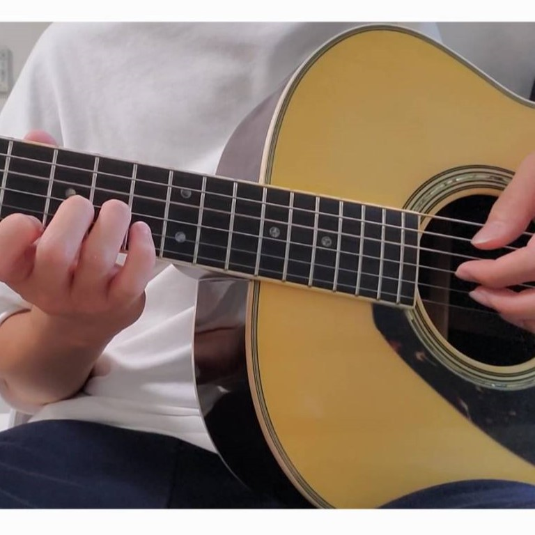

Information Technology Center, The University of Tokyo
東京大学 情報基盤センター
xuanzhengbo.ren@cc.u-tokyo.ac.jp
任 軒正博 / Ren Xuanzhengbo
Educational Background
学歴
- 2023.4 - 2026.3
片桐・星野研究室 Katagiri & Hoshino Lab
Doctor of Informatics,
Graduate School of Informatics, Nagoya University 名古屋大学 情報学研究科
博士（情報学） - 2018.9 - 2021.6
Master of Engineering,
Computer Network Information Center, Chinese Academy of Sciences,
University of Chinese Academy of Sciences 中国科学院大学 コンピュータネットワーク情報センター
修士（工学） - 2013.9 - 2018.6
Bachelor of Engineering,
College of Computer Science and Technology, Harbin Engineering University ハルビン工程大学 コンピュータサイエンス・テクノロジー学院
学士（工学）
Experiences
職歴
-
2026.4 - Present現在
Project Assistant Professor, Information Technology Center, The University of Tokyo 東京大学 情報基盤センター 特任助教 -
2025.4 - 2026.3
Junior Research Associate (JRA), RIKEN Center for Computational Science 理化学研究所 計算科学研究センター 大学院生リサーチ・アソシエイト（JRA）
Research Interests
研究分野
- High Performance Computing (HPC)ハイパフォーマンスコンピューティング（HPC）
- Software Auto-tuningソフトウェア自動チューニング
Certifications & Skills
資格・スキル
- Programming:プログラミング: Python / Fortran / C/C++
- Parallel Computing:並列計算: OpenMP / Kokkos / MPI / OpenACC
- Other Tools:その他ツール: Node.js
- Certifications:資格:
- Amateur Third-Class Radio Operator第三級アマチュア無線技士
- Japanese Language Proficiency Test (JLPT) N1日本語能力試験（JLPT）N1 - Languages:言語:
- Chinese (Native)中国語（母語）
- Japanese (Business Level)日本語（ビジネスレベル）
- English (Business Level)英語（ビジネスレベル）
Papers in Preparation
準備中の論文
- Xuanzhengbo Ren, Tetsuya Hoshino, Daichi Mukunoki, and Takahiro Katagiri, "Porting NICAM Microphysics to Kokkos: A Case Study in Performance Portability for Atmospheric Models," IPSJ Transactions on Advanced Computing Systems, 2025. (In press)
Publications (Peer-Reviewed)
出版物（査読付き）
- Xuanzhengbo Ren, Yuta Kawai, Tetsuya Hoshino, Hirofumi Tomita, Takahiro Katagiri, Daichi Mukunoki, and Seiya Nishizawa, "Learning-Augmented Performance Model for Tensor Product Factorization in High-Order FEM," IEEE Access, vol. 14, pp. 43679–43693, 2026. [DOI]
- Xuanzhengbo Ren, Yuta Kawai, Hirofumi Tomita, Seiya Nishizawa, Takahiro Katagiri, Tetsuya Hoshino, Masatoshi Kawai, Daichi Mukunoki, and Toru Nagai, "Performance Evaluation of Loop Body Splitting for Fast Modal Filtering in SCALE-DG on A64FX," in Proceedings of the 2025 International Conference on High Performance Computing in Asia-Pacific Region Workshops, Hsinchu, Taiwan, Feb. 2025, pp. 36–44. [DOI]
- Xuanzhengbo Ren, Masatoshi Kawai, Tetsuya Hoshino, Takahiro Katagiri, and Toru Nagai, "Auto-tuning Mixed-precision Computation by Specifying Multiple Regions"
- Xuanzhengbo Ren, Yuqi Zhao, Lin Wu, Jinrong Jiang, Changbin Zhang, Xiao Tang, Lina Han, Mingming Zhu, and Zifa Wang, "Towards Efficient Digital Governance of City Air Pollution Using Technique of Big Atmospheric Environmental Data," IOP Conference Series: Earth and Environmental Science, vol. 502, no. 1, pp. 012031, 2020. [DOI]
Posters & Other Presentations
ポスター発表・その他の発表
- 任軒正博, 河合佑太, 富田浩文, 西澤誠也, 片桐孝洋, 星野哲也, 河合直聡, 永井亨, 「SCALE-DGのModal Filteringにおけるループボディ分割の自動チューニング」, 第197回HPC研究会, 沖縄産業支援センター, 沖縄, 2024年12月16日.
- Xuanzhengbo Ren, Yuta Kawai, Hirofumi Tomita, Seiya Nishizawa, Takahiro Katagiri, Masatoshi Kawai, and Toru Nagai, "Implementing Fast Modal Filtering of SCALE-DG," in 2024 IEEE International Conference on Cluster Computing Workshops (CLUSTER Workshops), Kobe, Japan, 2024, pp. 150–151. [DOI] [Research Poster]
- 任軒正博, 河合佑太, 富田浩文, 片桐孝洋, 西澤誠也, 星野哲也, 河合直聡, 永井亨, 「不連続ガラーキン法を基づいた大気力学コアの性能評価と改善について」, 第193回HPC研究会, 北海道大学, 札幌, 2024年3月18日.
- Xuanzhengbo Ren, Yuta Kawai, Hirofumi Tomita, Takahiro Katagiri, Seiya Nishizawa, Tetsuya Hoshino, Masatoshi Kawai, and Toru Nagai, "An Evaluation of Discontinuous Galerkin Method based Global Nonhydrostatic Atmospheric Dynamical Core on A64FX Platform," HPC Asia 2024, Nagoya, Japan, 2024. [Poster]
Scholarship
奨学金
-
2024.4 - 2026.3
Tokai National Higher Education and Research System, Make New Standard Next-Generation Research Project 東海国立大学機構 メイク・ニュー・スタンダード次世代研究事業
Additional Education / Courses
その他の教育・講座
-
2022.4 - 2023.3
亜細亜友之会外語学院, Tokyo, Japan — Intensive Japanese Course 亜細亜友之会外語学院, 東京 — 日本語集中コース
Joint Projects
共同プロジェクト
- FE-Project (SCALE-DG) — Contributor: investigating and improving computational performance — 計算性能の調査と改善に貢献
Hobbies
趣味
- Guitarギター
- Japanese Animationアニメ
- Photography & Film Photography写真撮影・フィルム写真